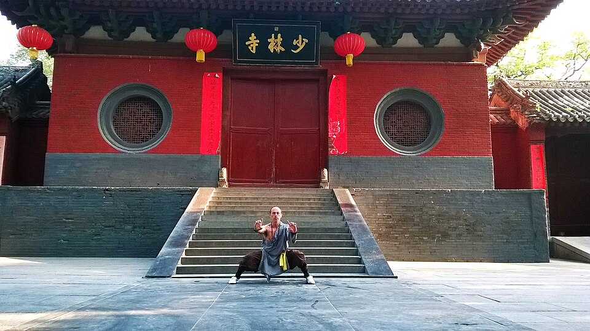

Stójki (bu), techniki rąk i nóg, taolu oraz szaoliński styl pięciu zwierząt
Aktualizacja: 2026-06
Solidna technika Shaolin zaczyna się od stójek i pojedynczych ruchów rąk i nóg, a układa w formy (taolu). To one są „alfabetem" stylu — bez nich zaawansowane techniki nie mają na czym się oprzeć. Ten rozdział omawia podstawowe stójki, najprostsze techniki, ideę formy oraz słynny szaoliński styl pięciu zwierząt.

Niska, szeroka stójka budująca siłę nóg i stabilność.
Stójka (chiń. bu, 步) to sposób ustawienia nóg i rozłożenia ciężaru ciała. Stójki są bazą każdej techniki: dają siłę nóg, stabilność i kontrolę środka ciężkości, a także uczą cierpliwości, gdy utrzymuje się je na czas. Oto najważniejsze stójki podstawowe:
| Stójka | Opis | Po co / czego uczy |
|---|---|---|
| Mabu (馬步, stójka jeźdźca / konia) | Stopy szeroko, równolegle, głębokie ugięcie kolan, plecy proste — jakby siedzieć na koniu. | Buduje siłę nóg i wytrzymałość, uczy stabilności i niskiego środka ciężkości. |
| Gongbu (弓步, stójka łuku) | Wykrok: noga przednia mocno ugięta, tylna wyprostowana — sylwetka jak napięty łuk. | Stabilna baza do uderzeń i pchnięć do przodu; przenoszenie siły z nóg. |
| Xubu (虛步, stójka pusta) | Ciężar niemal w całości na nodze tylnej; przednia lekko dotyka podłoża palcami — „pusta". | Mobilność i gotowość do szybkiego kopnięcia lub kroku przednią nogą. |
| Pubu (仆步, stójka niska / przysiad) | Jedna noga głęboko ugięta w pełnym przysiadzie, druga wyprostowana nisko w bok. | Rozwija gibkość bioder i siłę nóg; uniki i wejścia w niskie linie. |
| Dingbu (丁步, stójka „T") | Stopy blisko siebie, ciężar na jednej nodze, druga oparta palcami przy pięcie — układ przypomina literę „丁". | Zwarta, mobilna pozycja przejściowa; gotowość do kroku lub kopnięcia. |
Na stójkach buduje się techniki rąk (uderzenia i bloki) oraz kopnięcia. W Shaolin podkreśla się, że siła nie pochodzi z samej ręki — rodzi się w nogach i jest przenoszona przez biodra i talię (yao, 腰). Skręt bioder zamienia ruch ramienia w mocne, „całościowe" uderzenie.
Taolu (套路) to forma — ułożona, powtarzalna sekwencja stójek, kroków, uderzeń, bloków i kopnięć, wykonywana w określonej kolejności. Forma pełni rolę żywego zapisu technik: utrwala je w pamięci ciała, uczy płynnych przejść, oddechu, rytmu i orientacji w przestrzeni.
Adept zwykle zaczyna od prostej formy startowej, która składa się z kilku-kilkunastu podstawowych ruchów. Popularnym fundamentem bywa tan tui (彈腿 — „kopnięcia sprężynujące") — zestaw krótkich, powtarzalnych sekwencji z kopnięciami i uderzeniami, doskonalących podstawy. Inną grupą są proste formy typu lian huan („połączone ogniwa"), w których techniki łączą się w ciągi jak ogniwa łańcucha.
| Pojęcie | Znaczenie |
|---|---|
| Taolu | Forma — ustalona sekwencja technik wykonywana solo. |
| Tan tui | „Kopnięcia sprężynujące" — popularna forma podstawowa szlifująca fundamenty. |
| Lian huan | „Połączone ogniwa" — proste formy łączące techniki w ciągi. |
| Cel formy | Zapis i utrwalenie technik, nauka przejść, oddechu, rytmu i równowagi. |
Wśród szaolińskich stylów szczególnie znany jest system pięciu zwierząt (wu xing, 五形 — „pięć kształtów / postaci"). Każde zwierzę symbolizuje inną cechę i sposób ruchu; razem rozwijają komplet umiejętności: od fizycznej siły po pracę z oddechem i „duchem". To inspiracja ruchem zwierząt, nie ich dosłowne naśladowanie.
| Zwierzę | Cecha | Charakterystyka ruchu |
|---|---|---|
| Tygrys (虎, hu) | Siła | Mocne, potężne techniki; „pazury tygrysa", chwyty i twarde uderzenia — hartuje siłę i kości. |
| Żuraw (鶴, he) | Równowaga i precyzja | Wysmukłe, wyważone pozycje, stanie na jednej nodze, celne uderzenia „dziobem"; spokój i kontrola. |
| Lampart (豹, bao) | Szybkość | Krótkie, eksplozywne i błyskawiczne uderzenia; zwinność i dynamika ataku. |
| Wąż (蛇, she) | Płynność i qi | Miękkie, faliste, oplatające ruchy; praca z oddechem i qi, precyzyjne ataki w punkty. |
| Smok (龍, long) | Duch | Falujące, zmienne ruchy łączące twardość i miękkość; rozwija ducha (shen) i wewnętrzną energię. |